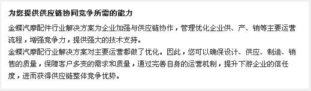

汽车配件行业解决方案
方案概述
“以技术换市场”的策略带来了中国汽车产业近几年“井喷式”的发展。全球著名的汽车生产厂商纷纷在中国建立生产基地，扩大生产规模；而国内自主汽车品牌的生产厂商也开始发展壮大，生产规模也越来越大。随之带动了零配件配套生产企业蓬勃发展，形成了一块广阔的市场。汽配制造企业覆盖多个行业：机械加工、铸造、锻造、冲压、电子、塑料、橡胶、化工……生产方式多种多样，管理特点复杂。但是汽配企业围绕主机厂为核心形成紧密的产业链，共同参与市场竞争。在整体供应链管理上，表现出较强产品链生产特点。
汽摩配行业解决方案特点

1、量产前的生产试制管理是汽配企业能否给主机厂进行配套的关键。开始试制后，试制计划的各项具体工作相互影响，可能影响到最后的交货。方案提供PDM接口实现生产试制设计工艺数据与ERP系统的共享，通过项目管理有效管控产品试制进度。
2、汽车行业生产周期长，而客户能够容忍的交货时间越来越短。为了提升整体供应链的响应速度。主机厂提供次年的年度计划，以便配套企业检讨次年的生产能力；普遍采用3+1月滚动计划的方式安排生产；方案提供3+1月滚动计划和S&OP协调企业各个业务计划。
3、主机厂普遍采取对零件使用后挂帐的方式，也叫“落地结算”，同时对供应商也采取类似的方法，方案通过“调拨发货”满足“落地结算”需求；
4、由于汽车行业的利润水平大幅度下降，主机厂会要求定期进行价格降低。方案在业务活动进行成本控制，提供完整的成本方案满足成本归集、分配、计算、分析，有效降低产品成本。
5、汽车主机厂是采取精益管理比例最高的一类企业，他们往往要求他们的供应厂商按装配的节拍要求送货到生产现场；而方案采用电子看板避免人工看板信息分散的弊端，通过电子看板的可视化管理，达到及时生产，减少浪费的目的。
业务流程
金蝶汽摩配件行业解决方案在提供标准功能解决汽摩配件企业理顺业务流程的基础上，特针对汽配行业需求，提供了生产试制、计划管理、销售VMI管理、供应商管理、供应商配额管理、精益管理、成本管理等方面的特色解决方案。这种综合方案解决的关键业务活动包括：
生产试制――金蝶汽摩配件行业解决方案通过PDM接口集成产品研发数据，管理生产试制进度，完成生产和采购计划分解，管理采购、生产业务。
销售――金蝶汽摩配件行业解决方案管理商机、报价、销售合同与订单、发货、结算全部流程，通过“调拨发货”满足“落地结算”需求。方案提高营销效益和工作效率，提高客户满意度和忠诚度。
计划管理――提供S&OP销售与运营计划，帮助企业根据主机厂提供的年度计划，进行年度生产能力、资金计划平衡。系统提供灵活、方便的主生产计划/物料需求计划方案：通过计划方案提供丰富的需求来源、计算参数等参数，满足3+1滚动计划、生产试制、成批生产各种类型对计划管理的需求；提供智能的计划建议，使得计划更科学、更可行，充分利用资源，缩短采购生产周期。
看板管理――提供电子看板，用生产、取货、采购看板来拉动生产，以看板图形化的显示和调整来消除不增值的活动，帮助企业消除生产现场的浪费。
车间控制――系统提供领料控制、工序进度、报废补制完整的流程控制，解决生产计划与实际情况脱节的问题；
提供任务管理、限额发料、生产汇报、物料报废和工序计划、派工、汇报、计时计件工资、任务全程跟踪、可视化排程等完备的车间生产管控处理，保证计划的执行。同时还提供高效的生产甘特图计划排产工具，方便生产调度人员调整实际的生产任务。
成本管理――为不同企业和企业的不同发展阶段，提供从产品成本、订单成本、作业成本与全面成本，渐进式的成本管理提升方案。而作业成本管理可以成本核算到每一道工序、工作中心，便于企业精确控制成本。
采购――金蝶汽摩配件行业解决方案管理供应商和价格、采购合同与订单并结合供应商配额管理、采购收料、采购结算，通过方案，企业可以优化供应商选择、缩短采购周期、降低采购成本，提高采购效率。
物流――金蝶汽摩配件行业解决方案的计划系统和看板管理提供物料和产品的正确数量和需要地点，并在物流和生产系统控制物料流动。
成本――结合基础资料设置、参数设置、流程设置，在业务流程进行采购成本、物料耗用控制。为不同汽摩配件企业和企业的不同发展阶段，提供从产品成本、订单成本、作业成本与全面成本，渐进式的成本管理提升方案。方案提供快捷、准确的成本核算工具进行成本核算，将企业的管理重点从低价值的工作中解放出来；更提供成本分析工具，帮助企业发现成本构成的可改善点，降低实际成本，适应主机厂的定期降价要求。
业务价值
销售管理：
1、有效获取主机厂的商机；
2、高效的模拟报价工具，缩短了报价周期，提升企业竞标能力；
3、提供调拨发货流程，应对主机厂VMI管理需求；
生产管理：
1、提供了S&OP，应对年度供需调节；
2、支持灵活变化的计划模式；
3、以电子看板管理，实现企业的拉式生产；
成本管理：
1、提高成本核算效率；
2、利用成本分析工具寻找成本构成中不合理成分；
3、工作重点由业务统计向成本分析管理层面转移。